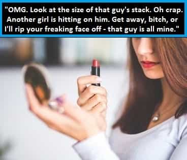
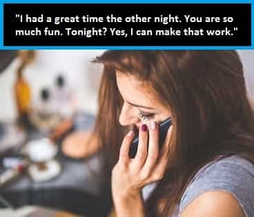

Bob Smith is a man in search of the truth. His favorite quotes are, "We're all fools on this earth, and I can be no different"; "I know it's true, I read it at the LIE-brary"; and "The truth is not misogynistic, it's just the truth".


We all know that women love money – that’s a given. And they love money more than they love anything else in this life. And women are constantly on the lookout for guys who have it. The question is, how do you give women the impression that you have a lot of money (even if you don’t), without saying a single word, while you are out on the hunt for hot, willing females?
Well, your old Uncle Bob is about to steer you directly to the Promised Land, in terms of the answer to that particular puzzler, and you don’t have to be rich in order to pull this incredibly effective trick off – you just have to make it look like you are.
One of my favorite tactics, whenever I am on the prowl for some horizontal refreshment, is to pull out a sizeable wad of cash while paying for the very first drink I order at whatever bar or club I might be visiting. After handling and counting money for many, many years, you become very adept at handling it – just like those guys you see on television, with the huge stacks of poker chips at the World Series of Poker, who are constantly manipulating their chip stacks in an effortless fashion, while they flick-flick-flick their chips, with only one hand and a thumb, as they contemplate their next play.
I’ll typically have at least $800 in cash with me, which I fold in half, and carry in the zip-up breast pocket of my vest, whenever I go out looking for horizontal refreshment. And when I pay for my very first beverage, if there are some good-looking female targets in the vicinity, I’ll pull out my stack and flick through it very quickly, and locate, and then pull out, just the right bill(s), in about three seconds flat.
As a quick aside, gents, always be sure to tip generously at bars and clubs; I usually tip 40% or better. Why? It engenders a feeling of goodwill in the hearts and minds of your servers, which means the next time you visit, they’ll be really glad to see you and they will very likely serve you quickly; it also shows any admiring women in the vicinity that you are very generous with your cash.
I always make sure to wait at that point, after paying for my very first drink, while still holding my stack, with the bills slightly fanned out in a very precise manner, until the bartender brings the change back (this way my female targets can clearly see the size of the stack). Also, I will never look at any of the women who might be watching me as I do this, nor will I look at the stack. I always maintain frame and act aloof.
When the bartender returns with my change, I’ll immediately focus on finishing the transaction, and I’ll drop the whole stack on the bar directly in front of me, and spin it, if necessary, to face me, so that the numerals on the bills are right-side-up, and then I’ll flick-flick-flick through the stack very rapidly, while deftly inserting each bill into its appropriate slot within the stack – 20s into the $20 bill portion, 10s into the $10 bill portion, 5s into the $5 bill portion, and the 1s into the $1 bill portion. And I’ll do all of this very swiftly, very surely, very precisely, very routinely, and very disinterestedly.
Executing this simple maneuver when paying for your first drink will immediately give you a huge advantage over the male competition in the vicinity; most guys never display cash in such an overt manner, and the vast majority use credit cards or debit cards to pay for their drinks. (Bingo, you just sent a very powerful message to any women who happened to be watching you, without saying a single word – while the orbiting chumps said absolutely nothing…)

The psychological effect that this has on women is absolutely staggering. Women are inveterate money-mongers, and their true internal thoughts and motivations are very seldom known, and those thoughts and motivations must be deduced via long-term observation and experimentation. As it turns out, most women keep their eyes peeled for guys with a large stack of cash, in the exact same way that they are habitually on the lookout for guys with large bulges in their jeans. I cannot tell you how many times women have approached me over the years, after realizing I am a guy who not only has money, but is used to carrying large quantities of it while knowing how to handle it.
Only a couple of weeks ago, this hot waitress (easily an 8), who is about 30 years younger than I am, laser-beamed right in on me, at this innocuous little saloon down the street, after she’d caught my act at the bar while I way paying for my first beer. And I know exactly why she did it. It sure as hell wasn’t because of my looks (heh). About 30 seconds later, I had her phone number, which she very willingly offered to me, after making the very first move herself, by walking right up to me and asking me my name, shortly before offering hers in return, and then making some sexually overt small talk.
As an added effect, while waiting to pay for another drink or get my change back after buying additional drinks, I will take one of the crisper bills (usually a $20, a $50 or a $100 bill), and I’ll play with it, in the same way those professional poker players effortlessly do tricks with their chip stacks. I’ll hold it firmly at the edges with both hands, lengthwise, and I’ll flip it upside-down, and then bow it out in the middle, by bending it and holding it aloft, face-down (it looks exactly like a horseshoe, once you are holding it correctly). Then, I’ll slide the bill back and forth, at the edges, by moving my hands up and down, so it appears that the bill is rolling on a pulley system, and I’ll do this effortlessly, and in a very disinterested manner.
Another neat trick to use is a little beauty that I call the pinwheel. By folding a bill in half, you can pinch it in the middle between your thumb and middle finger, and then, using your index finger and your ring finger, you can manipulate the bill, and rotate it, at the center, so that it revolves around and around like a pinwheel. If I am paying for additional drinks with a single bill (usually a $20 bill, a $50 bill, or a $100 bill; and remember, always show your entire stack when paying for your very first drink – after that, use one of these additional tricks), I will more often than not use this trick, or the pulley trick that I mentioned above. The more you practice it, the better you will get at it. Eventually, you’ll be able to spin the bill with enough speed and dexterity that any woman who is watching will take notice – and her subconscious mind will convince her, very quickly, that you are someone worth keeping an eye on.
An additional skill that you should acquire, involves properly handling the change you get back from a $100 bill. The methodology here is to display to all witnesses that you are flat-out unconcerned with something as ridiculously trivial as a measly $100 bill, and the change it generated for you after you paid for your drink. Generally, after paying for a drink with a $100 bill, I’ll get back mostly $20 bills. I will snatch these up from the bar and toss them to the side for just a moment, in a very disinterested manner, as if they had a disease. I won’t even look at the bills when I cast them aside. I’ll then sort the other bills, quickly and deftly, and place them into my stack within the right slots. Lastly, I’ll grab the $20 bills up with one, quick, effortless snatch, and put them into place.

You don’t have to be rich to make this work. You might be a college student on spring break, for example, who is carrying a modest amount of cash. The overall dollar amount of the stack is somewhat irrelevant, provided you have a lot of bills to work with. It’s all about how you handle the money that will enable you to hook the fish.
As long as you have at least three or four hundred dollars to flash, in mostly $20 bills and $10 bills, it will work. But you have to sell it convincingly. And the only way to sell it convincingly, is to practice handling and sorting and maneuvering the bills around, until it’s second nature to you. And this is something you can work on at home, away from prying eyes, until you have it down cold.
This truly is all about practice, and it’s something that is definitely worth learning. Eventually, you’ll be able to handle the cash so fast and so expertly, that any woman who sees you maneuvering it will receive an overwhelmingly positive psychological impression that works completely to your advantage. Nothing gets a woman’s immediate attention more than a guy who tips generously and knows how to handle a huge stack of cash – it screams, “This guy is worth fucking because he has lots of money, he’s generous with it, and he’s used to handling large sums of it.”
I hope you take these tips to heart, my friends, because this is one seriously advanced lesson in game that you are probably not going to read about anywhere else. As usual, good luck with your hunting; and may the best man – who possesses the best overall game – win.
Read Next: 3 Easy Ways To Attract More Women Into Your Life Today